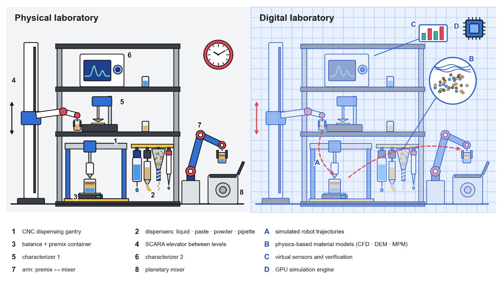
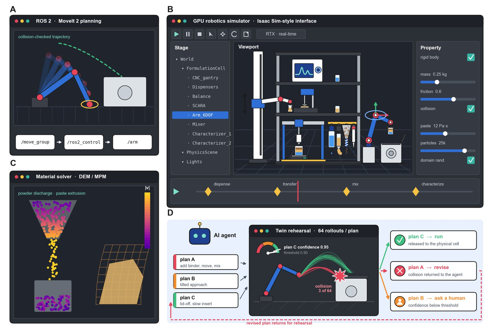
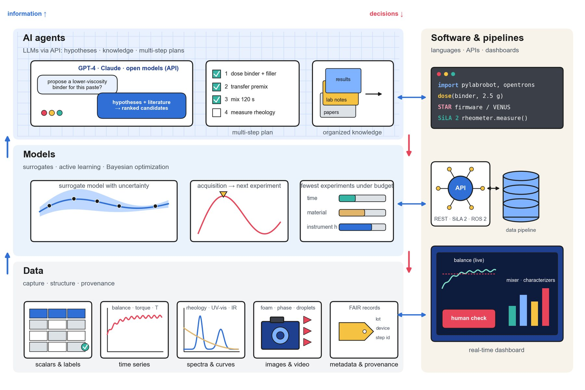

Ingredients of very different rheology are dosed into one premix cup, carried to a mixer, processed and characterized. This atlas follows that cup through the seven questions a team must answer to automate it, using the data of our review and a live digital twin of a formulation cell.
Real UR e-Series kinematics and meshes; every motion is an RRT-Connect plan checked against the device boxes before it plays.
The cell
One cup, four stations
The twin on the right is the Self-Formulating Lab cell: an analytical balance, a CNC dispensing gantry, a planetary mixer and a characterizer around a collaborative arm. It is the same cell as Fig. 1 of the review, reduced to the stations a premix cup visits.

Fig. 1. A formulation SDL and its digital twin.
Scroll on. Each step below moves the camera to the part of the cell it is about.
1 Dose
How is each ingredient dosed?
Viscosity, yield stress and powder flowability decide the mechanism. Drag the marker along any scale to see which technologies the review recommends there (Table 1).
2 Move
How does the premix cup move?
Five robot classes carry containers between stations, ordered by axes, reach and cost. Price tracks the class and the ecosystem more than the repeatability (Table 2). Select a point for details.
3 Buy
What can be bought?
Commercial dispensers by material class and integrated liquid-handling platforms (Tables 3 and 4). Bars show list prices on a log scale; hollow tags are quote-only, which is common where handling is hardest.
4 Extend
How do you go beyond the catalogue?
Low-cost retrofits change one layer of a purchased platform and unlock a capability its maker never specified (Table 5).
5 Rehearse
Will the plan work?
A twin rehearses a workflow before material is committed. Fidelity rises in four levels, and so does compute cost. The twin here works at level 2: kinematics and collision checking, shown by the boxes it plans against (Table 6).

Fig. 7. The digital twin as a working environment.
6 Orchestrate
How do the devices run as one?
Orchestration software sits between decisions and devices: it schedules work, holds the resource model, drives instruments through their interfaces and records what happened. The review compares the functions of eight open-source systems.
Fig. 8. Architecture of a formulation SDL.
7 Decide
What should we make next?
Data at the bottom, models that choose the next experiment in the middle, AI agents on top. Each agent role gets an autonomy level and a human checkpoint (Table 7).

Fig. 9. The decision ladder.
Fig. 3 of the review
Twenty ways labs sense, then act
Each study is titled by its sense–act sequence. Read across a row and a pattern appears: methods that measure the material before or while dosing it generalize best.
What we are building
From a review to a lab that designs itself
The review is the knowledge. The wiki keeps it current. Two agents put it to work: one watches vendors, the other designs a lab for a user's budget, materials and room.
Complete
Review
Self-Driving Laboratories for Formulation. Eight authors, 178 references, seven tables.
Talks with the user, proposes a cell, and shows it in the twin above with collision-checked motions. In the Lab Builder, users drag commercial devices into a 3D workstation and the cart prices it live.
A preview of the SFL agent's selection step. It is rule-based and uses list prices from the review. To lay the cell out yourself, open the Laboo design tool.
Cite the review
The paper behind the atlas
Manuscript in preparation (2026). The tables on this page are the review's Tables 1–7; numbered links go to its reference list in the wiki.
Related work
Self-Building Labs
Self-Building Labs (Bai, Zhao et al., arXiv 2610.23826) build the layout, twin, robot skills and workflows a lab needs for a scientific goal. The Self-Formulating Lab works one step earlier, choosing what to buy and how to lay it out for a formulation budget, so its output could be a starting point for a self-building lab.